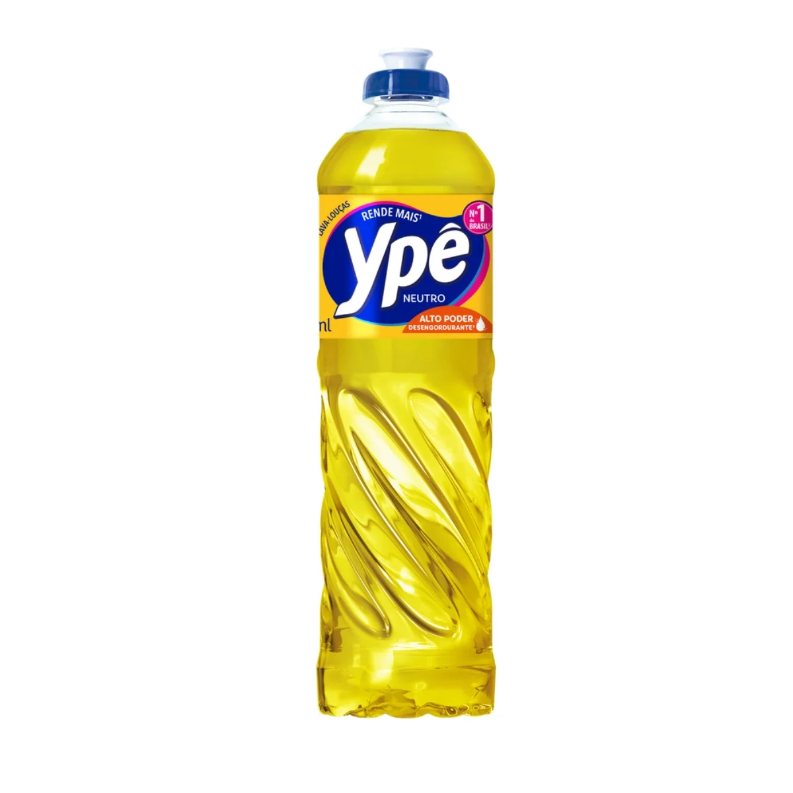
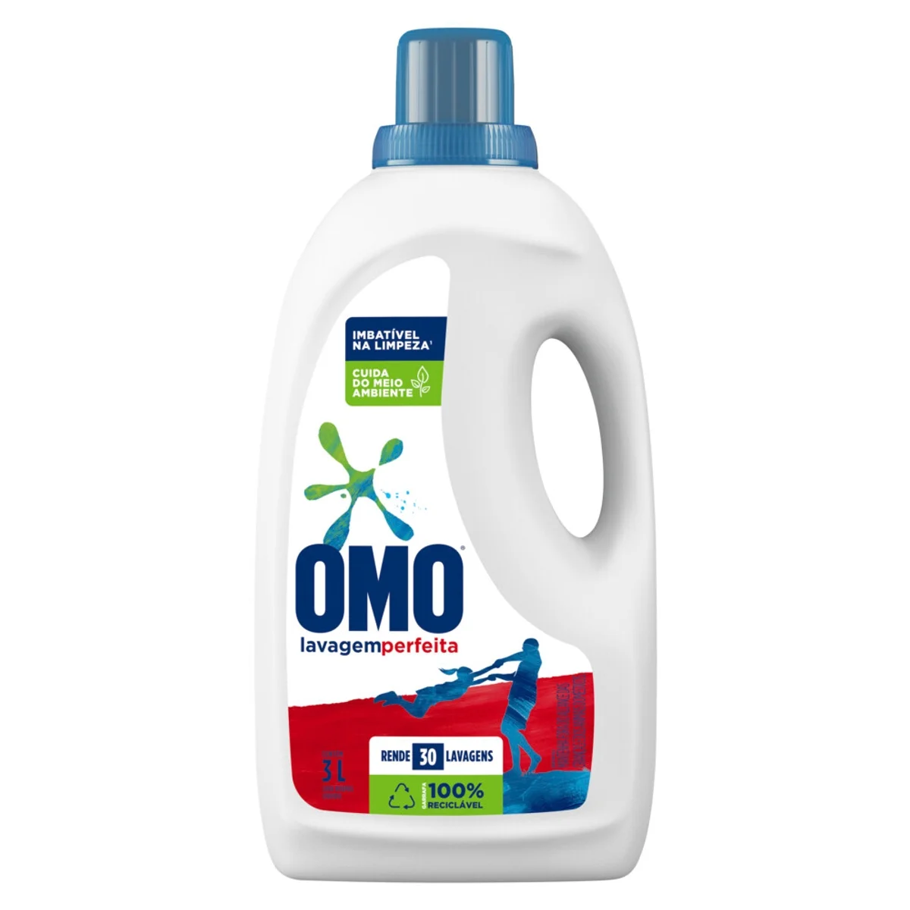

Detergente Ypê Neutro 500ml
Preferido dos lares brasileiros, o Lava-Louças Ypê Neutro é eficiente e com o melhor custo-benefício, garantindo a limpeza das suas louças usando somente o necessário.
R$ 3,19

Lava-Roupas Líquido Omo Lavagem Perfeita Galão 3l
OMO Lavagem Perfeita é perfeito para manter suas roupas impecáveis. Sua fórmula não deixa resíduos e remove as manchas de primeira.
R$ 46,99